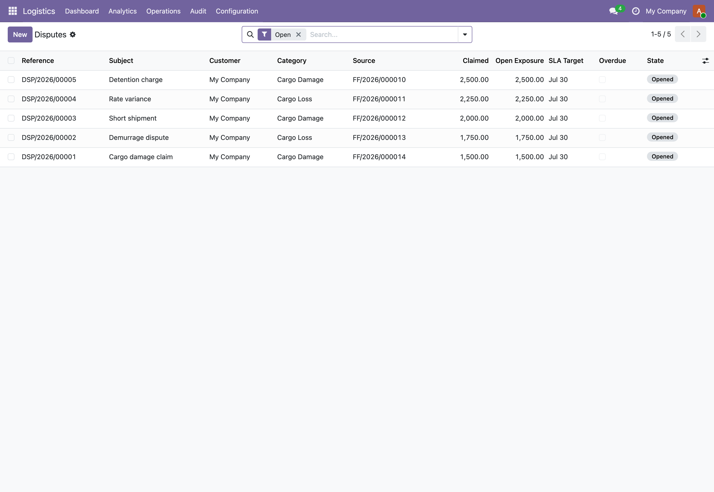

Cargo claims and post-confirmation scope changes, filed against any operational record, with an append-only audit trail and a clean apply-back to the sale order.

Claims and variations that resolveDisputes raised against any source document, with claimed amount, live open exposure, SLA target and a gated settlement path; variations post billable lines back onto the order.
A dispute or variation attaches to a sale order, freight job, transport trip, last-mile delivery, warehouse receipt or pick, ship disbursement account, or container. The source model is checked against an allow-list and the target record must exist, so a typo cannot create a dangling pointer.
Every dispute transition appends an event row. Events cannot be deleted, and key fields (dispute, type, timestamp, from and to state, company) are immutable after creation. State changes go only through action methods, never a raw write, so the record reads the same to an auditor as it did the day it closed.
A variation captures priced lines that net to a delta, moves through submit, approve and apply, then posts those lines onto the resolved sale order so the customer invoice picks up the revised charges. Applied lines are recorded against the variation for a later reversal, and lines lock once the variation is approved.
A consignee reports water damage on a container. The coordinator opens a dispute from the freight job itself, picks the Cargo Damage category (which carries a thirty-day SLA and a survey requirement), and records the claimed amount. The SLA target is computed from the open date; the daily cron will flag the case if it drifts past the window. Investigation starts, a surveyor report is attached, and an offer is tendered. The system refuses an offer above the claimed amount. The customer accepts, the claim is settled at the offered figure, and a settlement letter prints from the record. Every step, from open to close, is sitting in the append-only event log and on the dispute notice PDF, with nothing editable after the fact. Meanwhile a separate re-routing request on a different job becomes a variation: two priced lines, an approval, and an apply step that drops the revised charges straight onto the sale order.
In the shipped code today, each one a place where a cheaper module silently does the wrong thing.
The polymorphic link is validated twice: the source model must be in the eight-model allow-list, and the target record must actually exist. A dispute cannot point at a model the suite does not track or at a record that was never created.
An offered amount greater than the claimed amount is rejected by constraint. You cannot tender a settlement that exceeds what the customer asked for, which keeps the negotiation gap honest and the exposure tile correct.
The dispute and variation state machines only permit the transitions defined in their allow-lists. Trying to settle a dispute that was never accepted, or apply a variation that was never approved, raises a state-conflict error instead of silently corrupting the record.
Dispute events are append-only. They cannot be created outside the dispute's own action methods, their core fields are immutable after creation, and they cannot be deleted. The history is the history.
Variation lines are mutable while the variation is draft or submitted and lock the moment it is approved. A reduction line carries a negative unit price by design, so a variation can both add and remove charges in one document.
Apply resolves the sale order from the polymorphic source: a sale-order source is itself, a freight job or other source resolves to its linked sale order. If no sale order can be resolved, apply refuses rather than writing charges into thin air.
The eight shipped dispute categories cannot be renamed or deleted, only archived. Your own added categories stay fully editable, so reporting built on the seeded codes does not break under you.
Odoo 19 freight forwarder disputes, cargo damage claim management, demurrage dispute Odoo, short shipment claim, customs penalty dispute, logistics change order, variation order Odoo, scope change sale order, 3PL claims management, settlement letter PDF, dispute notice document, append-only audit trail, multi-company logistics, Odoo 19 Community logistics suite, freight job dispute tracking
The interface ships translated out of the box. Switch language in Odoo and the fields, menus, and messages follow.
Premium ERP Heritage modules that extend the same stack, each built to the same engineering bar.
Shared foundation for the ERP Heritage Employment Hero country packs
Bring Employment Hero onboarding workflows, employee goals and contractor flags into Odoo Community as real recor...
End to end French B2B and B2G electronic invoicing for the DGFiP reform, generating Factur-X PDF/A-3 with embedde...
Accept ZainCash wallet payments in Iraq at your Odoo checkout, on the ZainCash Payment Gateway v2 with OAuth2, re...
Sync Employment Hero ATS recruitment job openings into the standard Odoo Recruitment app, mapping each opening on...